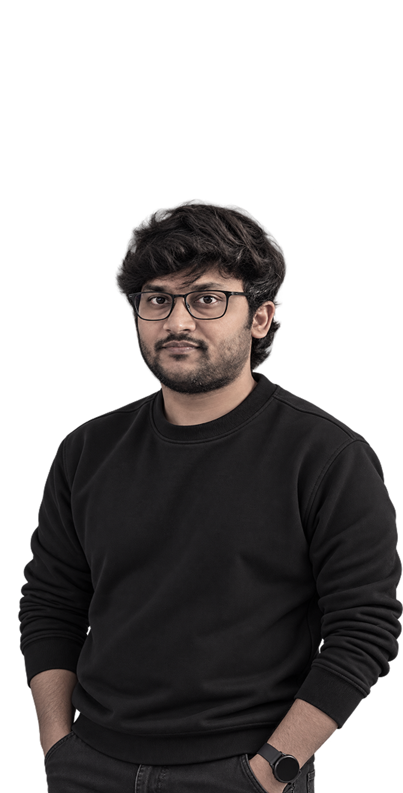

I make complicated products feel
Hey, I'm Hemanth, a Senior Product / UX Designer in Bengaluru. For 8+ years I've worked on healthcare, fintech and B2B products, and I start every one the same way: understanding the people and the system before I touch a screen.

Work
Products across different domains, with one thread running through them: less friction for the people using them.
I don't open Figma first. I want to know the business, the users and how they work today, then I start sketching. I'd rather ask a nurse how her shift runs than guess, and I treat pushback from an engineer as information about the product, not a verdict on my design.
Most of my career has gone into dense, high-frequency workflows, mostly in healthcare, with fintech and B2B along the way. I'm drawn to products where a small gain in clarity helps the people using them every day.
Working with product managers, researchers and engineers isn't a handoff for me. The best decisions I've seen came out of a constructive argument where everyone wanted the product to be better.
How I think about a product
Less a method than the order I ask questions in.
Good decisions come from good conversations.
Product
Alongside PMs from discovery to backlog refinement, turning requirements into clear flows and pushing back where users need something else.
Engineering
At Biofourmis, 10–15 engineers through sprints, reviews and design QA. Talking constraints early keeps designs buildable.
Research
I sit in on interviews, help synthesize what we hear, and carry findings into the design instead of leaving them in a deck.
Business stakeholders
With founders and clients I translate goals into practical product decisions and explain the reasoning.
Design teams
I've led designers and developers and mentored four designers through critiques and shared feedback.
Experience
Tap a role for detail.
Let's talk about what you're building.
Open to Senior Product / UX Designer roles. Click to copy my email.